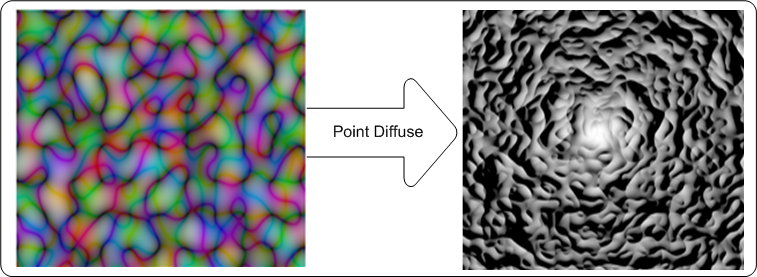
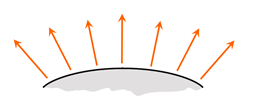
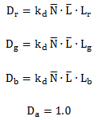

= surface normal unit vector, a function of x and y.
= surface normal unit vector, a function of x and y. = unit vector pointing from surface to light.
= unit vector pointing from surface to light.Lr, Lg, Lb = the light color in RGB components.
title: Point-diffuse lighting effect description: Use the point-diffuse lighting effect to create an image that appears to be a non-reflective surface with light scattered in all directions. This effect uses the alpha channel as a height map and lights the image with a point light source. ms.assetid: C98A4962-B9EB-4095-9AC4-F1C32C574892 keywords:
Use the point-diffuse lighting effect to create an image that appears to be a non-reflective surface with light scattered in all directions. This effect uses the alpha channel as a height map and lights the image with a point light source.
The color of the output bitmap is a result of light color, light position, and the surface geometry. The alpha channel output for each pixel with diffuse lighting is always 1.0.
The CLSID for this effect is CLSID_D2D1PointDiffuse. To use this effect, add dxguid.lib to the linker dependencies.
The example here shows the input and output images of the point-diffuse lighting effect.

Diffuse lighting refers to light that is reflected in multiple directions as seen here.

The effect calculates the final output pixel values are calculated using these equations:

Where: kd = diffuse lighting constant. Specified by the user.
= surface normal unit vector, a function of x and y.
= unit vector pointing from surface to light.
Lr, Lg, Lb = the light color in RGB components.
| Display name and index enumeration | Description |
|---|---|
| LightPosition D2D1_POINTDIFFUSE_PROP_LIGHT_POSITION | The light position of the point light source. The property is a D2D1_VECTOR_3F defined as (x, y, z). The units are in device-independent pixels (DIPs) and are unbounded. The type is D2D1_VECTOR_3F. The default value is {0.0f, 0.0f, 0.0f}. |
| DiffuseConstant D2D1_POINTDIFFUSE_PROP_DIFFUSE_CONSTANT | The ratio of diffuse reflection to amount of incoming light. This property must be between 0 and 10,000 and is unitless. The type is FLOAT. The default value is 1.0f. |
| SurfaceScale D2D1_POINTDIFFUSE_PROP_SURFACE_SCALE | The scale factor in the Z direction. The surface scale is unitless and must be between 0 and 10,000. The type is FLOAT. The default value is 1.0f. |
| Color D2D1_POINTDIFFUSE_PROP_COLOR | The color of the incoming light. This property is exposed as a Vector 3 (R, G, B) and used to compute LR, LG, LB. The type is D2D1_VECTOR_3F. The default value is {1.0f, 1.0f, 1.0f}. |
| KernelUnitLength D2D1_POINTDIFFUSE_PROP_KERNEL_UNIT_LENGTH | The size of an element in the Sobel kernel used to generate the surface normal in the X and Y direction. This property maps to the dx and dy values in the Sobel gradient. This property is a D2D1_VECTOR_2F (Kernel Unit Length X, Kernel Unit Length Y) and is defined in (DIPs/Kernel Unit). The effect uses bilinear interpolation to scale the bitmap to match size of kernel elements. The type is D2D1_VECTOR_2F. The default value is {1.0f, 1.0f}. |
| ScaleMode D2D1_POINTDIFFUSE_PROP_SCALE_MODE | The interpolation mode the effect uses to scale the image to the corresponding kernel unit length. There are six scale modes that range in quality and speed. See Scale modes for more info. The type is D2D1_POINTDIFFUSE_SCALE_MODE. The default value is D2D1_POINTDIFFUSE_SCALE_MODE_LINEAR. |
| Enumeration | Description |
|---|---|
| D2D1_POINTDIFFUSE_SCALE_MODE_NEAREST_NEIGHBOR | Samples the nearest single point and uses that. This mode uses less processing time, but outputs the lowest quality image. |
| D2D1_POINTDIFFUSE_SCALE_MODE_LINEAR | Uses a four point sample and linear interpolation. This mode outputs a higher quality image than nearest neighbor. |
| D2D1_POINTDIFFUSE_SCALE_MODE_CUBIC | Uses a 16 sample cubic kernel for interpolation. This mode uses the most processing time, but outputs a higher quality image. |
| D2D1_POINTDIFFUSE_SCALE_MODE_MULTI_SAMPLE_LINEAR | Uses 4 linear samples within a single pixel for good edge anti-aliasing. This mode is good for scaling down by small amounts on images with few pixels. |
| D2D1_POINTDIFFUSE_SCALE_MODE_ANISOTROPIC | Uses anisotropic filtering to sample a pattern according to the transformed shape of the bitmap. |
| D2D1_POINTDIFFUSE_SCALE_MODE_HIGH_QUALITY_CUBIC | Uses a variable size high quality cubic kernel to perform a pre-downscale the image if downscaling is involved in the transform matrix. Then uses the cubic interpolation mode for the final output. |
[!Note]
If you don't select a mode, the effect defaults to D2D1_POINTDIFFUSE_SCALE_MODE_LINEAR.
| Requirement | Value |
|---|---|
| Minimum supported client | Windows 8 and Platform Update for Windows 7 [desktop apps | Windows Store apps] |
| Minimum supported server | Windows 8 and Platform Update for Windows 7 [desktop apps | Windows Store apps] |
| Header | d2d1effects.h |
| Library | d2d1.lib, dxguid.lib |